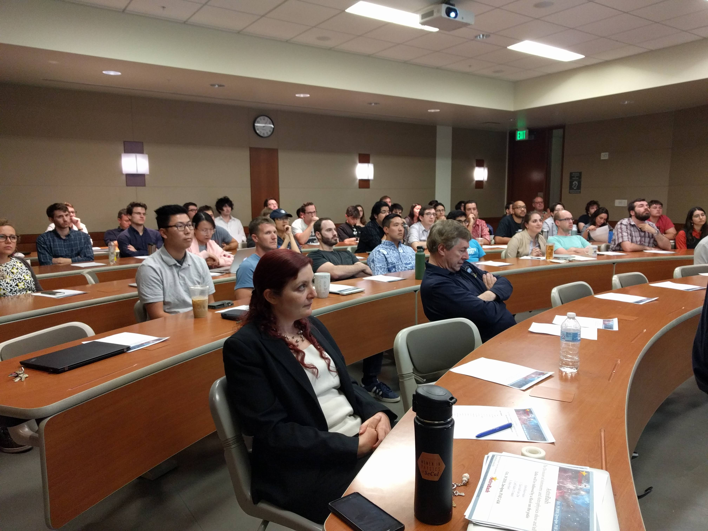

AstroBash
The Division of Astronomy and Astrophysics show and tell
Talks will take place between 2-4pm (each talk 2m) followed by social on patio.
Sign-in for a talk:
To sign-in for a talk, please send your (max 3) pdf slides by Oct. 15, 2pm to:Simon Birrer: sibirrer@astro.ucla.edu and Smadar Naoz: snaoz@astro.ucla.edu
|  |  |
 |  |
 |  |
Talk schedule
| Time | Name |
| 2:00 | Organizers |
| 2:05 | Mike Fitzgerald |
| 2:07 | Xuheng Ding |
| 2:09 | Helen Kim |
| 2:11 | Anna Ciurlo |
| 2:13 | Kevin T. Hayakawa |
| 2:15 | Matt Hosek |
| 2:17 | Jean-Luc Margot |
| 2:19 | Abhimat Gautam |
| 2:21 | Yeou Chiou |
| 2:23 | Planetarium |
| 2:25 | Jamie Ryan |
| 2:27 | Mark Morris |
| 2:29 | Xin Wang |
| 2:31 | Michelle Consiglio |
| 2:33 | Rory Bentley |
| 2:35 | Akash Gupta |
| 2:37 | Matt Malkan |
| 2:39 | Alexander Stephan |
| 2:41 | -- |
| 2:43 | Ronald A. Lopez |
| 2:45 | Mathew Yu |
| 2:47 | Michael Topping |
| 2:49 | Briley Lewis |
| 2:51 | Devin Chu |
| 2:53 | Danny Cohen |
| 2:55 | Veronica Dike |
| 2:57 | Ned Wright |
| 2:59 | Daniel Gilman |
| 3:01 | Isabella Trierweiler |
| 3:03 | Jean Turner |
| 3:05 | Jon Zink |
| 3:07 | Kelly Cosmo O'Neil |
| 3:09 | Lilan Yang |
| 3:11 | Mason MacDougall |
| 3:13 | Richard Mebane |
| 3:15 | Jesus Salas |
| 3:17 | Michael Rich |
| 3:19 | Jordan Runco |
| 3:21 | Tony Pahl |
| 3:23 | Zhuo Chen |
| 3:25 | Austin Hoag |
| 3:27 | Simon Birrer |
| 3:29 | Adam Trapp |
| 3:31 | Smadar Naoz |
| 3:33 | Alec Vinson |
| 3:35 | Sanaea Rose |
| 3:37 | Peter Williams |
| 3:39 | Alice Shapley |
| 3:41 | closing remarks |
| >3:45 | Bash on the patio |